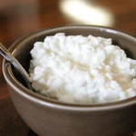

Low-Fat Cottage Cheese
- Benefits: Provides fast-absorbing whey protein and slow-absorbing cassein protein for post-exercise muscle recovery from small muscle tears created during weight lifting and supports muscle growth. Low in saturated fat. Good source of glutamine for muscle recovery. Excellent source of calcium (14% of daily value for 2,000 calorie diet) for bone health. Its 79% water content helps to replenish fluids lost during workout perspiration.
- 
- Nutrition Breakdown:
- Serving Size: 4-oz. Individual Snack Cup
- Calories: 90 cals
- Fat: 2.5g
- Carbs: 6g
- Protein: 11g